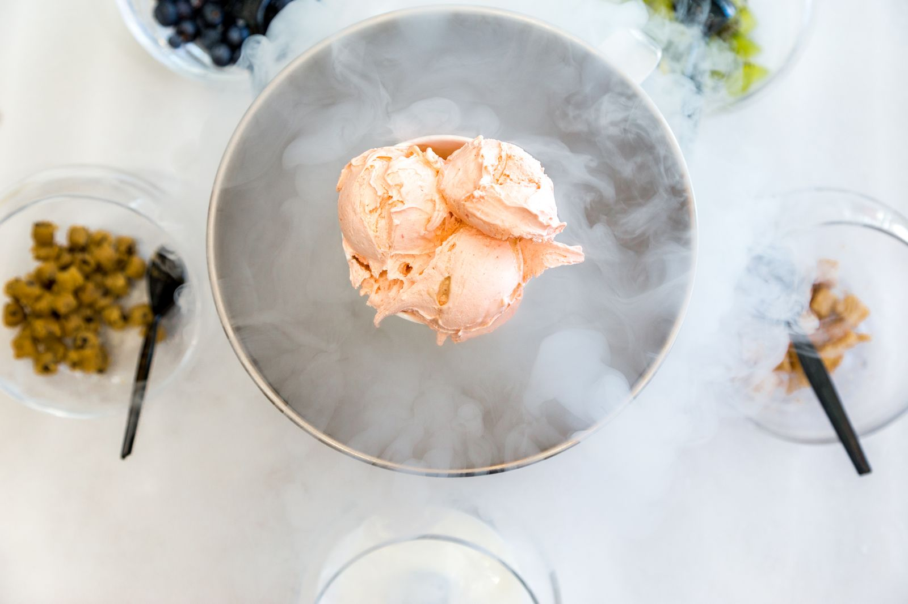

A frozen course that could survive service
The flagship engagement: a nitrogen-frozen dessert for a twelve-seat restaurant's nine-course menu — moved from the table, where it was theatre, to the pass, where it became a course. Plate time went from over three minutes to 55 seconds, two sittings a night, and it stayed on the menu for the whole season.
“The frozen course lands in under a minute a cover, all night — and the nitrogen never once became the show. That is the difference between a trick and a course.”

A frozen dessert as the penultimate course of a nine-course menu. It had to plate in under a minute, at 24 covers a night across two sittings, without a third pair of hands.
The freeze moved from table-side — three minutes a plate, vapour in the guests' faces — to the pass. Batches of 2 litres frozen during the savoury courses, held briefly, tempered two minutes, portioned at 40 seconds, plated at 20. The dewar was sited at the pass only after the room's ventilation was checked against the gas-volume rule on the worksheet.
Average plate time 55 seconds across both sittings, from the practice's own timing log. The course ran the full season unchanged; the restaurant's own cooks now run it without the studio in the room.